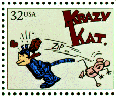
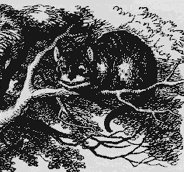

<html>
<head>
<title>The Annotated "China Cat Sunflower"</title>
</head>
<body>
<i>"A leaf of all colors plays a golden-stringed fiddle..."</i>

<h2>The <i>Annotated</i> "China Cat Sunflower"</h2>
An installment in the <a href="gdhome.html"><i>Annotated</i> Grateful Dead Lyrics.<br>
By <a href="david.html">David Dodd</a><br>
1997-1998 Research Associate, Music Dept., University of California Santa Cruz
<hr>


<a href="copyrigh.html">Copyright notice</a>


<hr>


<a href="#title"><h3>China Cat Sunflower</h3></a>


Words by Robert Hunter; music by Jerry Garcia<br>


Copyright Ice Nine Publishing; used by permission.


<p>
<blockquote>

Look for awhile at the <a href="#porcelain">China Cat</a> <a href="#sunflower">Sunflower</a><br>


<a href="#proud">proud-walking jingle</a> in the <a href="#midnight">midnight sun</a><br>


<a href="#copperdome">Copper-dome</a> <a href="#bodhi">Bodhi</a> drip a silver kimono<br>


like a <a href="#quilt">crazy-quilt</a> stargown <br>


through a dream night wind<br>


<p>


<a href="#krazy">Krazy Kat</a> peeking through a lace bandana<br>


like a one-eyed <a href="#cheshire">Cheshire</a><br>


like a <a href="#jack">diamond-eye Jack</a><br>


A leaf of all colors plays<br>


a golden string fiddle<br>


to a <a href="#ee">double-<i>e</i></a> waterfall over my back<br>


<p>


Comic book colors on a violin river<br>


crying <a href="#leonardo">Leonardo words</a> <br>


from out a silk <a href="http://www.missouri.edu/~cceric/index.html">trombone</a><br>


I rang a silent bell<br>


beneath a shower of <a href="#pearls">pearls</a><br>


in the <a href="#eagle">eagle wing palace</a><br>


<a href="#chinee">of the Queen Chinee</a><br>




</blockquote>
<hr>


<h3><a name="title">China Cat Sunflower</a></h3>


<p>


Hunter has posted the <a href="http://www.dead.net/RobertHunterArchive/files/HandwrittenLyrics/ChinaCat.html" target="new">manuscript</a> of an early draft of the song in his archives.


<p>
Musical details:
<ul>
<li>Key: G
<li>Time signature: 4/4
<li>Chords used: G, F, D, E, B, A
<li>Songbook availability:
<ul>
<li><a href="songbook.html#Anthology"><cite>Anthology</cite></a>
<li><a href="songbook.html#authvol2"><cite>Grateful Dead: Authentic Guitar Classics Vol. 2</a></cite>.
<li><cite><a href="songbook.html#without">Without A Net</a></cite>
<li><cite><a href="songbook.html#hundred">Hundred Year Hall</a></cite>
</ul>
</ul>
<p>


Recorded on:


<ul>


<li><a href="discog1.html#aoxomoxoa"><cite>AOXOMOXOA</cite></a>


<li><a href="discog1.html#europe"><cite>Europe 72</cite></a>


<li><a href="discog2.html#net"><cite>Without a Net</cite></a>.


<li><cite><a href="discog2.html#hundred">Hundred Year Hall</a></cite>


<li><cite><a href="discog1.html#dick4">Dick's Picks, vol. 4</a></cite>


</ul>


<p>


An enduring song in the band's repertoire, usually paired with "I Know You


Rider" in concert, leading to the designation "China/Rider."


<p>


A reader writes:


<blockquote>


Date: Mon, 08 Jul 1996 13:51:32 -0700<br>


From: Ken Rattenne <rattenne@earthlink.net><br>


<p>


Hi David,


<p>


...


<p>


Anyway, this message is in reference to China Cat Sunflower. This is


purely a piece of trivia-with-a-small-T. During the period of 1971-72


and then again between 1976 and 1980 I was in a Bay Area band called


China Cat, the name adopted by myself as a direct result of my love that


Dead song. IN addition, we covered a few Dead arrangements of cover songs


(Know You Rider, Not Fade Away). Since i was the bass player (and one of


the creative forces in that band) I worked into our songs a lot of


syncopation. The Dead were a big influence.


<p>


But wait, there's more. We weren't just a garage band. By 1979 we had


released a single on Atlantis Records of LA and were getting lots of air


play in the SF Bay Area market...the name China Cat was well-exposed


during that period.


<p>


If you have time, check out my <a href="http://home.earthlink.net/~rattenne/ChinaCat/ccatindx.htm" target="new">China Cat page</a>, which (of course) features


a direct link to your China Cat Sunflower page.


<p>


Ken Rattenne<br>


rattenne@earthlink.net








</blockquote>


<p>


<!a href="http://www.americast.com/WENZ/sanctum/bands/OROBOROS/index.html" target=new">Oroboros</a> covers the song in their live performances.


<p>


In an interview in <cite>Relix</cite> (vol. 5 #2, p. 24), Hunter said: "I


can sit right here and write you a China Cat or one of those things in ten


minutes...How many of those things do you need...?"


<p>


In his <a href="biblio.html#hunter"><cite>Box of Rain</cite></a>, Hunter writes:


<blockquote>


"Nobody ever asked me the meaning of this song. People seem to know exactly what


I'm talking about. It's good that a few things in this world are clear to all


of us."


</blockquote>


<p>


In an interview in <cite><a href="biblio.html#golden">Golden Road</a></cite> (Spring, 1991, p. 29)


 Hunter says:


<blockquote>


" 'China Cat' took a long time to write. I wrote it in different settings and added this and


that to it. It was originally inspired by Dame Edith Sitwell, who had a way with words--I like the


idea of quick, clicky assonance and alliteration like 'See me dance the polka, said Mr.


Wag like a bear, with my top hat and my whiskers, that tra-la-la trapped affair.' I just like the


way she put things together. I'd have to admit that before you could trace it back that there was some


influence."


</blockquote>


<p>


(Sitwell's influence on this song may also be found in the <a href="#chinee">closing line</a>.)


<p>


The Dame Edith Sitwell poem quoted by Hunter goes like this:


<blockquote>


<center>


<h3>Polka</h3>


</center>


'Tra la la la la la la la<br>


La<br>


La!


<dd>See me dance the polka,'<br>


Said Mr. Wagg like a bear,<br>


'With my top hat<br>


And my whiskers that--<br>


(Tra la la la) trap the Fair.


<p>


Where the waves eem chiming haycocks<br>


I dance the polka; there<br>


Stand Venus' children in their gay frocks--<br>


Maroon and marine--and stare


<p>


To see me fire my pistol<br>


Through the distances blue as my coat;<br>


Like Wellington, Byron, the Marquis of Bristol,<br>


Buzbied great trees float.


<p>


While the wheezing <a href="doll.html#hurdy">hurdy-gurdy</a><br>


Of the marine wind blows me<br>


To the tune of Annie Rooney, sturdy,<br>


Over the sheafs of sea;


<p>


And bright as a seedsman's packet<br>


With zinnias, candytufts chill,<br>


Is Mrs. Marigold's jacket<br>


As she gapes at the inn door still,


<p>


Where at dawn in the box of the sailor,<br>


Blue as the decks of the sea,<br>


Nelson awoke, crowed like the cocks,<br>


Then back to dust sank he.


<p>


And Robinson Crusoe<br>


Rues so


<p>


The bright and foxy beer--<br>


But he finds fresh isles in a Negress' smiles--<br>


The poxy doxy dear,


<p>


As they watch me dance the polka,'<br>


Said Mr. Wagg like a bear,<br>


'In my top hat and my whiskers that--<br>


Tra la la la, trap the Fair.


<p>


Tra la la la la--<br>


Tra la la la la--<br>


Tra la la la la la la la<br>


<dd>La<br>


<dd>La<br>


<dd>La!'


</blockquote>


<p>


This note from a reader:


<blockquote>


Subject: china cat sunflower <br>


Date: Fri, 1 Nov 1996 10:15:30 -0500 <br>


From: MADnies666@aol.com<br>


<p>


Dear David,


<p>


...


<p>


Now to a couple of notes about China Cat.  First, people may want to know


that the poem Polka, that Hunter cites has been set to music, along with


about 40 other Sitwell poems by the British composer William Walton


(1902-1983).  'Polka' appears in a piece for reciter and chamber ensemble


called "Facade."  There are many recordings of the music, which is funny and


ironic, but not many with reciter.  There was one on London with Jeremy Irons


but I think that it's  out of print now.  I believe that there is a recording


with Sitwell doing the reciting on EMI or Pearl but I'm not sure.  In any


event anyone interested in some wonderfully witty word fantasys, and some


droll music should try to hear this piece.


<p>


--Rick


</blockquote>


<p>


And in David Gans' <a href="biblio.html#gans"><cite>Conversations with the Dead</cite></a>,


Hunter says:


<blockquote>


"I think the germ of [China Cat Sunflower] came in Mexico, on Lake Chapala.


I don't think any of the words came, exactly--the rhythms came.


<p>


I had a cat sitting on my belly, and was in a rather hypersensitive state,


and I followed this cat out to--I believe it was Neptune--and there were


rainbows across Neptune, and cats marching across the rainbow. This cat took


me in all these cat places; there's some essence of that in the song." --p. 24


</blockquote>


<hr>
<h3><a name="porcelain">China Cat</a></h3>
This note from a reader:
<blockquote>
Date: Thu, 16 May 2002 14:57:11 -0400<br>
From: "Borner, Brooke [PVTC]" <brooke.borner@citigroup.com><br>
<p>

Hi,
<p>
Great website!  Just wanted to mention something which you probably have
heard many times before:  I believe the 'China Cat' in China Cat
Sunflower refers to the beckoning porcelain cats that adorn the front windows of
Japanese restaurants and teahouses, etc.  The figure is called is known
as Maneki Neko and is believed to bring customers and wealth to a
merchant's establishment.  The legend of the Maneki Neko is that a traveling man,
who was sitting out a storm under a tree one day, was beckoned to the porch
of a nearby temple by a cat that appeared to be waving to him.  When the
traveler approached the cat, a lightning bolt hit the tree where he had been
sitting  only moments before.  The grateful traveler became a benefactor of the
temple and the image of the waving cat entered the popular iconography
of Japanese culture forever.  Most Japanese businesses even today have a
china cat in the front window or above the cash register.

</blockquote>
<hr>

<h3><a name="sunflower">Sunflower</a></h3>


This note from a reader:


<blockquote>


Subject: china cat sunflower <br>


Date: Fri, 1 Nov 1996 10:15:30 -0500 <br>


From: MADnies666@aol.com<br>


<p>


Also,  I can't help but wonder about the Sunflower in CCS.  It makes me think


of two things immediately; VanGogh and Allen Ginsburg.  I think the VanGogh


is a stretch for while there are some psychedelic aspects to the Sunflower


paintings, they really are too virulently angry and psychotic to have much


connection to such a warm, childlike song like China Cat.


<p>


On the other hand, I would be surprised if anyone who had hung out in coffee


houses in the early sixties and hung with Neal Cassidy would be unfamiliar


with "Sunflower Sutra" by Ginsberg. The poem appears in <cite>Howl and other poems</cite>


which is dedicated to, among others, Cassidy.  The sunflower in this poem is


more likely linked.  While it is some times a dark presence, a representation


of mortality, it is also a symbol of hope, of  at least a once lived life.


 It is rather more all encompassing, somthing our worldly, joyous  China Cat


might be.  Just a thought.


<p>


--Rick


</blockquote>


<hr>
<h3><a name="proud">Proud-walking jingle</a></h3>
A reader, Joe Zomerfeld, notes that this phrase parallels the line in <a href="eleven.html">"The
Eleven"</a>:
<blockquote>
"Six proud walkers on the jingle-bell rainbow"
</blockquote>
<hr>

<h3><a name="midnight">midnight sun</a></h3>

An oxymoron, though one which is actually applied to arctic regions such as Scandinavia and

Alaska (the land of the midnight sun). Some similar flavor to the two words "Dark" and "Star" (<a href="darkstar.html">q.v.</a>).

Compare the line in <a href="soma.html#midnight">"So Many Roads"</a>

<hr>
<a name="copperdome"><h3>Copper dome</h3></a>
This note from a reader:
<blockquote>
From: YukisDad@aol.com [mailto:YukisDad@aol.com]<br>
Sent: Thursday, November 21, 2002 5:41 AM<br>
Subject: Input for China Cat
<p>

Thanks for your amazing work on the Dead lyrics. I visit often. With regard to China Cat, another vector you may want to include is:
<p>
"Proud walking jingle in the midnight sun...
Copper dome bodhi..."
<p>
On the corner of Castro and 18th streets in SF, there's a bank with a copper dome. Just up 18th street is a popular bar, The Midnight Sun.
<p>
thanks,<br>
Scott
</blockquote>
<hr>

<a name="bodhi"><h3>Bodhi</h3></a>


<blockquote>


"(Sanskrit and Pali: "awakening," enlightenment"), in Buddhism,


the final Enlightenment, which puts an end to the cycle of


transmigration and leads to Nirvana, or spiritual release; the


experience is comparable to the Satori of Zen Buddhism in Japan.


The accomplishment of this "awakening" transformed Siddhartha


Gautama into a Buddha (an Awakened One).<br>


The final Enlightenment remains the ultimate ideal of all


Buddhists, to be attained by ridding oneself of flase beliefs and


the hindrance of passions..."


</blockquote>


--<cite><b>The Encyclopedia Britannica.</cite></b>


<hr>


<a name="leonardo"><h3>Leonardo words</h3></a>


Maybe a reference to the fact that <a href="http://www.mos.org/sln/Leonardo/" target="new">Leonardo da Vinci</a> wrote in


mirror script.


<hr>


<a name="pearls"><h3>Pearls</h3></a>


Both pearls and the moon are "symbols of the Buddha-nature inherent in all beings."


(<a href="biblio.html#snyder">Snyder</a>, <cite>Cold Mountain Poems</cite>, p. 63.")


<p>


According to Pao-chih (418-514),


<blockquote>


Why should you look<br>


for treasure abroad?<br>


Within yourself you<br>


have a bright pearl!


</blockquote>


Quoted in <a href="biblio.html#hanshan">Burton Watson's</a> translations of the


Cold Mountain poems, p. 73.)


<p>


Note also the parallel between the "shower of pearls" in China Cat Sunflower


and the "nightfall of diamonds" in <a href="darkstar.html">Dark Star</a>.


<hr>
<h3><a name="quilt">crazy-quilt</a></h3>
For information on crazy quilts in general, see <a href="http://www.geocities.com/SoHo/Lofts/6531/index.html" target="new">Crazy
Quilt Central</a>.
<hr>

<a name="krazy"><h3>Krazy Kat</h3></a>


The supreme creation of George Herriman (1880-1944), the Krazy Kat strip


appeared daily from 1913 to the time of its creator's death.


<p>


<blockquote>


"There are many ways to view <i>Krazy Kat</i>, and it has been analyzed exhaustively.


It has been portrayed as a variation on the eternal triangle of tragic romances;


as a grand statement on freedom versus authority; as an allegory on innocence


meeting reality; and, of course, as a comic cacophony of obsessions. The strip


had a Joycean affinity, especially in its high/low wealth of language. Herriman


is supposed to have once responded to these analyses with the astonished reply that


he merely drew a comic about a cat and mouse." --<a href="biblio.html#marschall">


Marschall.</a> <cite>America's Great Comic-Strip Artists.</cite>. pp 110-111.


</blockquote>


<p>





The US Postal service issued a <a href="http://www.usps.gov/images/stamps/95/comics.gif" target="new">Krazy Kat stamp</a> in 1995, as part of their comics


commemoratives issue.


<p>


Check out <a href="http://www.donmarquis.com/archy/index.html" target="new">The Archy and Mehitabel page</a> for more samples of Herriman's work. (Not to mention the wonderful Don Marquis!)
<p>
And this note from a reader:
<blockquote>
Dear Mr. Dodd
   <br>
      First of all I'd like to express my deepest thanks to you for creating such an
  incredible website. I have spent many hours astutely reading all of the insightful
  annotations. Some of them have thoroughly blown my mind. I have to say that I
  feel I was born in the wrong decade. Being only seventeen and an infant in the
  eighties, I never had the chance to see the Dead live. This, more then anything,
  pains me. However, I still consider myself a loyal and dedicated fan, for I feel
  the message behind the music is not bound by the confines of time. The first
  dead tune I heard was off a tape my buddy made for me. It was a version of
  China/Rider from the Europe 72 album. Immediately I fell in love with the music.
  Naturally when I first discovered the site I went strait to the China Cat lyrics.
  What had Jerry been saying all those years? The line "Krazy Kat peeking
  through a lace bandana" interested me.  The footnote about the cartoon was
  very insightful indeed, but I couldn't help but wonder if that was really what Mr.
  Hunter was referring to. Recently I read On The Road by the talented Jack
  Kerouac. My conscienceness was soaked in a feeling of understanding and
  connection when I read the line where  Dean referred to Sid, the protagonist, as
  the "crazy cat". I am sure that Hunter was a fan of Kerouac because Kerouac
  was one of the beat gods whom the counterculture of the sixties idealized(and
  rightly so). Sid, the crazy cat, is a character who is utterly excited with life itself.
  He travels around the country meeting new people, observing life, and
  immersing himself in the freedom of thought, expression, and liquor. Most of Sid
  observes and the "Crazy Cat" "peeks". And is peeking not observing? Of course
  it is. Both the song and the book fill me with a similar feeling a feeling of glee and
  mirth. This was a connection I simply could not let pass me by. Perhaps the
  assumption that the lyrics are spelled with "k's" is incorrect. Or perhaps not. Just
  something to think about. Once again I'd like to thank you for all your work.
   <p>
   -Your fellow Dead enthusiast, <br>
   Kieran
</blockquote>
In slight amendment, this note from another reader:
<blockquote>
<blockquote>
Date: Mon, 29 Apr 2002 18:15:17 EDT<br>
From: FOURGAUGE@aol.com
<p>
Hello,<br>
 I am new to your site and find it so amazing!! Thank You.   <br>
 I happened to be reading China Cat Sunflower and clicked on the link to Krazy Kat.  A fan wrote a letter about "On the Road" by
Kerouac, but i am pretty sure she used a wrong name for a character.  She probably meant to type Sal, but instead typed Sid.  The
character is Sal Paradise, and i dont even think there is a Sid in the book at all.  Minor problem, but just letting you know.    <br>
Dave Harding



</blockquote>
</blockquote>

<hr>
<a name="cheshire"><h3>Cheshire</h3></a>
A reference to the Cheshire-Cat of <a href="http://dir.yahoo.com/Arts/Humanities/Literature/Authors/Literary_Fiction/Carroll__Lewis__1832_1898_/">Lewis Carroll's</a> <a href="http://www.cs.cmu.edu/People/rgs/alice-table.html"><cite>Alice's Adventures in Wonderland</cite></a> (1865): We first meet the Cheshire Cat  in the Duchess' kitchen. She is nursing a baby:
<blockquote>
"...The only two creatures in the kitchen, that did <i>not</i> sneeze, were the cook, and a large cat, which was lying on the hearth and grinning from ear to ear.<br>


`Please would you tell me,' said Alice, a little timidly, for she


was not quite sure whether it was good manners for her to speak


first, `why your cat grins like that?'<br>


`It's a Cheshire cat,' said the Duchess, `and that's why."


</blockquote>


<p>


<p>


<br>


And a little later, she meets the cat again:



<blockquote>


"...when she was a little startled by seeing the Cheshire-Cat


sitting on a bough of a tree a few yards off.<br>


The Cat only grinned when it saw Alice. It looked good-natured,


she thought: still it had <i>very</i> long claws and a great many


teeth, so she felt that it ought to be treated with respect.<br>


`Cheshire-Puss,' she began, rather timidly, as she did not at all


know whether it would like the name: however, it only grinned a


little wider. `Come, it's pleased so far,' thought Alice, and she


went on. `Would you tell me, please, which way I ought to go from


here?"<br>


`That depends a good deal on where you want to get to,' said the


Cat.<br>


`I don't much care where---' said Alice.<br>


`Then it doesn't matter which way you go,' said the Cat.<br>


`--so long as I get <i>somewhere</i>,' Alice added as an


explanation. ..."


</blockquote>


and later,


<blockquote><a name="baby">


</a>


"`By-the-bye, <a href="baby.html">what became of the baby?'</a>


said the Cat. `I'd nearly forgotten to ask.'<br>


`It turned into a pig,' Alice answered very quietly, just as if


the Cat had come back in a natural way.<br>


`I thought it would,' said the Cat, and vanished again.'"


</blockquote>


The cat makes one more (partial) appearance, at the Queen's


croquet game. She orders him beheaded, but the executioner says


he can't behead the cat, since only the head is visible.


<p>


A footnote in the wonderful <a href="biblio.html#carroll"><cite><b>The Annotated


Alice</cite></b></a> speculates on the origin of the Cheshire


Cat:


<blockquote>


"`Grin like a Cheshire cat' was a common phrase in Carroll's day.


Its origin is not known. The two leading theories are: (1) A sign


painter in Cheshire (the county, by the way, where Carroll was


born) painted grinning lions on the signboards of inns in the


area (see <cite>Notes and Queries</cite>, No. 130, April 24,


1852, page 402), (2) Cheshire cheeses were at one time molded in


the shape of a grinning cat (see <cite>Notes and Queries</cite>,


No. 55, Nov. 16, 1850, page 412.) `This has a peculiar Carrollian


appeal,' writes Dr. Phyllis Greenacre in her psychoanalytic study


of Carroll, `as it provokes the fantasy that the cheesy cat may


eat the rat that would eat the cheese.' The Cheshire Cat is not


in the original manuscript, <cite> Alice's Adventures


Underground.</cite>


</blockquote>


<p>


Other references to the Cheshire Cat in Grateful Dead and related lyrics include the early


Warlocks song <a href="ccdo.html">"Can't Come Down"</a>, and "Down the Road." (lyrics by


Robert Hunter, music by Mickey Hart) on <cite>Mickey Hart's Mystery Box</cite>, with its


image of Garcia disappearing in the sky, leaving just "a smile in empty space."


<p>


The evocations brought out by the use of the word "Cheshire"


include all the wonderful characters and situations of the Alice


stories, which were widely evoked in rock lyrics of the late


60's, most notably in the Jefferson Airplane's "White Rabbit." A


case could be made for the Beatles' "I am the Walrus" as well.


<hr>


<a name="jack"><h3>Diamond-Eye Jack</h3></a>


The Jack of Diamonds is <i>not</i> a one-eyed jack, contrary to what


I wrote earlier in these pages. Thanks to Daniel Freeman for the


correction!


<p>


And this note from a reader:


<blockquote>


Subject: More China Cat <br>


Date: Thu, 25 Jul 1996 17:05:49 -0700 <br>


From: Ken.Johnson@ci.seattle.wa.us


<p>


Seems to me that the "Diamond Eye Jack" refers to the shape of eyes on the clown in a


     Jack-in-the-Box, the toy not the meat.


<p>


     Later,<br>


     FURTHUR,<br>


     Ken Johnson (still at kenj111111@aol.com)


</blockquote>
<p>
And another reader writes:
<blockquote>
Q:  When is a one-eyed Jack a diamond?<br>
A:  When one-eyed Jacks are wild.<br>
(See, e.g, <a href="rag.html#jacks">Doin' that Rag</a>, "One eyed jacks and the deuces are wild")

</blockquote>

<hr>


<a name="ee"><h3>Double E</h3></a>
This is a mystery phrase. I'm coming to think that it actually <i>originated</i> with Bob Dylan's song, "It Takes a Lot to Laugh," which includes the line:
<blockquote>
 "Don't the brakeman look good, Ma, flaggin' down the
double-e...."
</blockquote>
although I have always previously thought that it really was a type of train, probably standing for the Double Express--therefore, a fast train. Might also be a shortened version of "Double-Ender," defined in <cite><a href="biblio.html#rail">Rail Talk</a></cite> as "a steam locomotive built to run equally well in either direction. It had two boilers and a central cab and firebox."
<p>
See also Warren Zevon's "Poor Pitiful Me," which contains the line:
<blockquote>

"Laid my head on the railroad track, waitin' on the Double E."
</blockquote>

<p>


This note from Daniel S. Dawdy, maintainer of the <a href="http://www.cwrr.com/">Cyberspace World Railroad</a>:


<blockquote>


Date: Tue, 25 Apr 95 12:36 CDT<br>


From: "Daniel S. Dawdy"


<p>


Hi David:


<p>


Double E - I have never heard of this myself.  You may be right, however,


the most popular passenger locomotive in the 40's through the 60's was built


by EMD and called an E-unit.  It came in many styles starting with the E2, and


up to the last ones built which were E9's.  They were diesel-electric and most


times, on long passenger hauls, were run with other E's.  Could be two, three


or more.  I am just guessing here and may be way off base, but that's what comes


to my mind.  That may be a good one for the newsgroups.  I checked my


definitions


and came up empty.


</blockquote>


<p>


This could mean either that a Double E is a double-locomotive diesel-electric


powered train, or that it is a reference to the E2 model built by EMD. More


word could be forthcoming from the diesel experts! So stay tuned...


<p>


This note from a reader: (reprinted with permission)


<blockquote>





Date: Wed, 8 Mar 95 12:15:08 PST<br>


From: ken johnson <kjjj490@wadnr.gov><br>


To: ddodd@serf.uccs.edu<br>


Subject: Re: Just stopped by to say<br>


<p>


The only thing I can add to the annotation, off the top of my head, is


that "double-E waterfall" to me, as a musician, meant one of those


unfretted notes way up the guitar neck, that when played through a


flange/echo device provides cascades of echo/overtones, in an


audio waterfall.


</blockquote>
<p>
This note from a reader:
<blockquote>
Date: Thu, 2 Oct 1997 11:12:50 -0500<br>
From: "Jonathan T. Beers" <jbeers@mge.com><br>
Subject: "double-e" train lyrics
<br>
Bob Dylan's "It Takes A Lot to Laugh, It Takes A Train to Cry" includes
the lyric: "Don't the brakeman look good, Ma, flaggin' down the
double-e...."
<br>
Somehow, the China Cat lyric, "double-e waterfall" doesn't feel train
related to me. Not sure what it connotates to me, though. Somehow
related to the E-string on a guitar, maybe?
</blockquote>
<p>
And this note from a reader:
<blockquote>
Subject: the double E<br>
Date: Wed, 13 May 1998 18:07:51 -0700 (PDT)<br>
From: Candice Y Lin <cylin@cats.ucsc.edu><br>
<p>
David
<p>
     Hi, I was in the Dead class that you visited at UCSC. Thanks for
coming, I found you to be a most entertaining and interesting guest. I
talked to my boy friend's dad, who's a train fanatic, about the
mysterious double E. I'm sure you've already come up with this
explanation, but we thought it meant the Evening Express train. Anyway,
thanks for coming, I work at a library too.
<p>
                                                        Candice Lin


</blockquote>
<p>
Another:
<blockquote>
Date: Mon, 16 Nov 1998 21:24:23 -0800<br>
From: "Roserunner     (Scott Baldwin)" <roserunr@jps.net><br>
Subject: China Cat
<p>
Wonderful site!
<p>
I've meditated many times on the lyrics of various Dead songs.
Your site adds insight to several of them.
<p>
I have a thought about the mysterious Double E Waterfall in
China Cat Sunflower.
<p>
We all know Hunter is mightily interested in the Old West.  A
railroad buff once told me that a very popular train guage in
the West of the 1880s was a Double E Guage.  All trains of the
period had steam engines.  The boiler for those engines was
stoked by a fireman.  It was a hot job.  Especially during the
summer.  Every once in a while, the train would stop at a water
tower, to refill the water holding tank for the boiler.  The
mechanism for the refill involved a boom attached to a water
tower.  A hose dangled from the end of the boom, to provide
some direction to the water.  The hot sweaty fireman would
swing the boom over the opening for the holding tank, pull the
cord and let the water pour down.  When the tank was full, he
would close the valve, and swing the boom back out of the way.
<p>
My thought is that sometimes a fireman would pause, pull the
cord for a moment, and let the water cascade over him,
providing great pleasure.  As Jerry said "All the golden
yummies, for SECONDS at a time!"  That water cascading from the
train water tower sure seems like a "Double-E waterfall over my
back" to me :)
<p>
Just my $.02.
<p>
Thanks for the great site.
<p>
Happy trails,<br>
Roserunner


</blockquote>
<p>
And this note from Dave Manoni, pointing to a guitary instruction site that tells of a chord called the Double E:
<blockquote>
David,
<p>
I was curious about the Double-E in China Cat.  I went looking around and found this:
<p>
<a href="http://www.mentalgiant.com/lesson_22.htm" target=new>http://www.mentalgiant.com/lesson_22.htm</a>.
<p>
Take it easy.
<p>
Dave
</blockquote>
<p>
Another theory:
<blockquote>
Subject: Double e<br>
Date: Mon, 31 Dec 2001 19:04:34 -0500<br>
From: "Trevor Balmer" <trevbal@earthlink.net><br>
<p>
I wanted to thank you for all your work on the site.  It is absolutely one of my favorites.  I do
have another 'double e' reference point for the China Cat lyrics.  See what you think-
<p>
While in the Army I bought some US Savings Bonds.  These bonds are designated as series EE
bonds.  A partial tie-in to The 'I'm Uncle Sam' lyric from US Blues?  Thanks again!
<p>
Trevor in Georgia



</blockquote>
<p>
This note from a reader:
<blockquote>
Subject: Double E<br>
Date: Tue, 30 Apr 2002 03:50:12 -0700<br>
From: "Roger Stomperud" <stomper@dccnet.com><br>
<p>
Hi again David<br>
<p>
    About "China Cat Sunflower", the "double-e" line, if it refers to trains, means (as far
as I am concerned) the type of locomotive used by the train. General Motors and their
EMD (their diesel loco division) had a series of 'covered wagon' locomotives begun in the
late 1930's with the FT. This was a two truck, 4 axel 1500hp loco, and it was soon
replaces by the F series, another 2-T/4-A engine. For passenger service EMD developed
the E series, a 2-truck, 6 axel loco with more horsepower. So to me, double-e simply
means a train powered by two EMD E series locos.
   <p>
   The musician in me tells me that that has nothing to do with the song. It doesn't
really make sense (Hunter and his cat were on Neptune when they wrote it, remember),
but in music we have double flats and double sharps. And then there are double stops,
perhaps more common to the violin family than the guitar, but used by both.
    <p>
	In "Box Of Rain" Hunter claims that he's never been asked the meaning of his lyrics
for China Cat Sunflower, but he has revealed bit about where it comes from and the
circumstances surrounding the writing them.
 	   <p>
Just rambling....<br>
Roger Stomperud



</blockquote>
<p>
And still more mail on this line:
<blockquote>
Date: Fri, 06 Oct 2006 16:58:10 -0400<br>
From: Philip E. Coyle <pcoyle at wcu dot edu><br>
Subject: China Cat Sunflower--double e<br>
<br>
Dear David,<br>
Here is my take on "double e waterfall," which seems to me definitive:<br>
<br>
The previous line refers to a "golden string fiddle," so I have always
taken it that the "double-e" refers to the Southern Appalachian Mountain
fiddling technique of playing a simultaneous "E" on both your A and E
strings. Thus the golden-string fiddle leads you to a musical waterfall,
flowing over your back.
<br>
Ted Coyle<br>
Associate Professor of Anthropology<br>
Western Carolina University

</blockquote>
<p>
And this:
<blockquote>
Date: Wed, 4 Oct 2006 09:47:33 -0400<br>
From: "Schellbach, Peter" <peter.schellbach at lehman dot com><br>
Subject: Double-e waterfall<br>
<br>

I was exploring some trivia on your excellent site and got tied up on
the interpretations of the "double-e" in CCS.  The "double-E waterfall"
has to be the guitar itself.  Two E strings (high and low) and it's
slung over one's back...

</blockquote>
<hr>


<h3><a name="eagle">eagle wing palace</a></h3>


Compare Hunter's lyric "Invocation" from the <b>Eagle Mall Suite</b>:


<blockquote>


"To the Eagle Palace with walls of water we came..."


</blockquote>


<hr>


<h3><a name="chinee">palace of the Queen Chinee</a></h3>


A quote from the Dame Edith Sitwell poem "Trio for Two Cats and a Trombone":


<blockquote>


"To the jade 'Come kiss me harder'<br>


He called across the battlements as she<br>


Heard our voices thin and shrill<br>


As the steely grasses' thrill,<br>


Or the sound of the onycha<br>


When the phoca has the pica<br>


In the palace of the Queen Chinee!"


</blockquote>


See the <a href="#title">general footnote</a> above, under the song's title, for Hunter's comments on Sitwell's


influence.


<hr>


keywords: @comics, @cats, @nonsense, @cards<br>


DeadBase code: [CCAT]


<hr>


First posted: February, 1995<br>


Last revised: October 12, 2006
<pre>
























</pre>
<script src="http://www.google-analytics.com/urchin.js" type="text/javascript">
</script>
<script type="text/javascript">
_uacct = "UA-368015-1";
urchinTracker();
</script>

</body></html>


